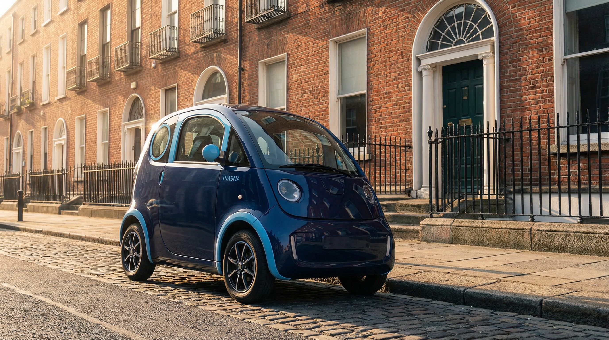
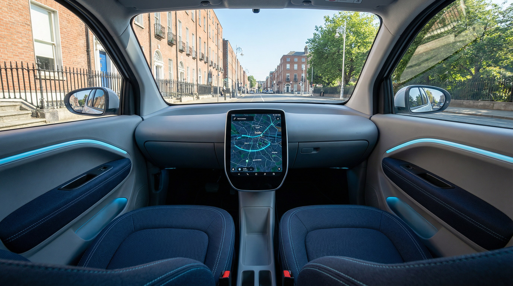
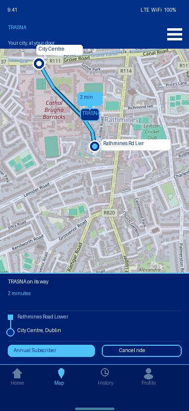
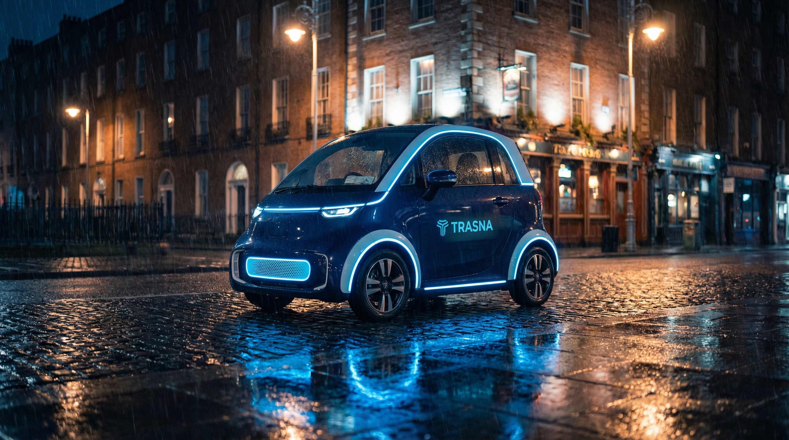
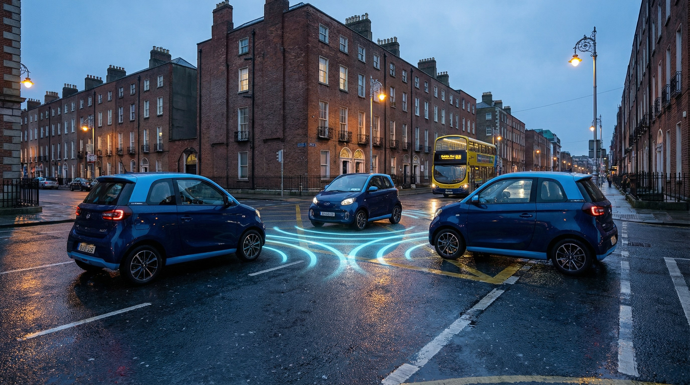

TRASNA is a publicly owned autonomous transport system for every resident of County Dublin — from Balbriggan to Shankill, from Tallaght to Dún Laoghaire, from Blanchardstown to Ringsend. Whether you live in Swords, Clondalkin, Stillorgan, or the city centre, a TRASNA is always three minutes away — morning, noon, or midnight. No waiting in the rain. No taxi queues. No surge pricing. Just a clean, safe, autonomous car at your door.



One button. No surge pricing, no waiting to see if a driver accepts. A TRASNA is always nearby.
The nearest vehicle comes to you. No driver. No fuss. Just a clean, climate-controlled two-seat car with your name on the screen.
Tell it where you're going, and sit back. TRASNA syncs with your devices — enjoy your own music, a podcast, check your feeds, make calls or attend a Zoom. The car handles the rest, merging smoothly with other TRASNA vehicles and navigating every road in the county without you lifting a finger.
A flat annual subscription. Unlimited trips. No hidden fees. Cheaper than a bus pass, more convenient than owning a car.
TRASNA isn't just a transport system. It's a transformation of how all four Dublin local authorities work, move, and live.
Whether you live in the city centre or the outer suburbs, TRASNA gives you a genuine alternative to the car. In the suburbs, it can take you directly to where you are going, or to high-speed bus, or rail or Luas stops. In the city, it makes every journey faster, cheaper, and more convenient than driving and parking.
In some areas, buses and trams will remain the backbone for high-capacity corridors. TRASNA will fill the gaps — the last mile, the multi-stop journey, the late-night trip home.
No more queueing for taxis at 2am. No more temptation to drink-drive. A TRASNA is always there, waiting to take you home safely.
Parents can send their teenagers home from training, monitored in real-time via the app. Elderly relatives can travel independently without relying on family or expensive taxis.

TRASNA vehicles communicate with each other 10 times per second. At junctions, they don't need traffic lights. They simply adjust their speed to weave through each other without stopping — increasing road capacity by 40%.

By utilising Dublin's existing bus lanes, TRASNA requires a fleet of just 51,000 vehicles to guarantee a 3-minute wait time across all four local authority areas (Dublin City, Fingal, South Dublin, and Dún Laoghaire-Rathdown). It costs less than one-tenth of MetroLink, covers the entire county from day one, and begins operating in 2029.
TRASNA is not just a fleet of cars; it is critical national infrastructure. It is designed to be secure, reliable, and continuously improving.
TRASNA will know where you travel, which is why privacy is written into its charter. TRASNA will never sell your personal data, location history, or travel patterns to third parties. It is a public service, not a data broker.
A TRASNA microcar is built for a 7-year, 250,000km lifespan. Because they are electric, they have 50% lower maintenance costs than petrol cars. When a vehicle's sensors detect a maintenance need or a drop in cleanliness, it simply drives itself to a depot for servicing.
While the cars are driverless, the system requires a massive human workforce. TRASNA will directly employ approximately 1,500 people — including remote assistance operators, depot technicians, mechanics, cleaners, and software engineers.
TRASNA vehicles do not rely on a live internet connection to drive safely — all collision avoidance happens on the car itself. The fleet operates on an isolated, encrypted sub-network, meaning a breach cannot spread.
Like your smartphone, TRASNA improves over time. Every year, the fleet receives major Over-The-Air (OTA) software upgrades — delivering smoother cornering, better routing, and new app features.
TRASNA is more than a transport project. It is a statement of national ambition.
In the 1960s, Seán Lemass and T.K. Whitaker transformed Ireland from an agrarian economy into a modern industrial state. Today, Ireland is the European home of the world's leading technology and AI companies. Yet our physical infrastructure often lags behind our digital economy.
By building the world's first publicly owned, county-wide autonomous transport network, Ireland would cement its position as a global leader in applied AI and smart infrastructure. TRASNA would generate massive, sustained positive publicity worldwide — proving that the forward-looking, innovative spirit of the Whitaker era is alive and well in the 21st century.
Government approval. Establish TRASNA as a statutory body. Issue tender for vehicle manufacture and AV technology partner.
Finalise vehicle design. First 5,000 units delivered. Build charging infrastructure across the county.
Deploy 15,000 vehicles across all of Dublin city and county. Access limited to 50,000 beta users to test the full door-to-door experience at scale.
51,000-vehicle fleet operational across all of Dublin city and county. Every resident of County Dublin has a TRASNA within three minutes of their door.
Extend to Meath, Kildare, and Wicklow. Integrate with national rail and bus networks.
TRASNA is not just cheaper, faster, and more flexible than MetroLink. It is a once-in-a-generation opportunity to transform Dublin into a city where clean, safe, universal transport is a right, not a luxury.
The technology is ready. The economics are proven. The only question is whether we have the ambition to build it.